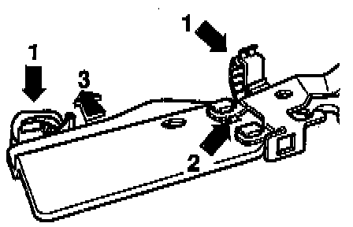

Replacement
WARNING:Always replace circlips and self-locking nuts and bolts.
CAUTION: On vehicles equipped with an anti-theft radio, make sure you know the correct radio activation code before disconnecting the battery.
NOTE:
^ Disconnect the battery Ground (GND) strap.
^ Lubricate all bearing and contact surfaces with MoS2 lubricant
^ Follow General repair instructions.

COMPONENT NOTES AND INFORMATION
1 Pedal cluster mounting bracket
- Removing: first remove steering column with column tube, refer to Steering and Suspension
- Disconnect brake pedal from push rod of brake master cylinder, refer to Replacement. Service and Repair
NOTE:
^ Only the new pedal cluster mounting bracket with a clutch cable guide tube -arrow- is available as a replacement part.
^ Before installing the new pedal cluster bracket on a vehicle with hydraulic clutch control, the guide tube must be removed.
Saw it off flush with bracket.
2 Self-locking nut
- Always replace
- Tightening torque: 25 Nm (18 ft lb)
- For attaching bracket to threaded stud on installation plate
3 Self-locking nut
- Always replace
- Tightening torque: 25 Nm (18 ft lb)
- For attaching bracket to threaded studs on vacuum brake booster
4 Self-locking bolt
- Quantity: 2
- Always replace
- Tightening torque: 25 Nm (18 ft lb)
- For attaching bracket to assembly support
5 Pivot pin
- For clutch and brake pedals
- Installation position, refer to Fig. 1, below.
6 Securing clip
- Removing/Installing, refer to Replacement. Service and Repair
7 Bolt
- Tightening torque: 25 Nm (18 ft lb)
- For attaching additional brace (item -9-) to pedal bracket
8 Self-locking nut
- Always replace
- Tightening torque: 25 Nm (18 ft lb)
- For attaching additional support -9- to floor panel
9 Support
- Removing and installing, refer to Replacement. Service and Repair
10 Brake pedal
11 Clutch pedal
- Removing and installing, refer to Replacement. Service and Repair
12 Retainer
- Removing and installing, refer to Replacement. Replacement
13 Securing clip
- Secures pivot pin -5-
- Removing, refer to Replacement. Service and Repair
14 Over-center spring
- Removing and installing, refer to procedure below.
15 Over-center spring mount
- Install in mounting bracket
16 Self-locking nut
- Always replace
- Tightening torque: 25 Nm (18 ft lb)
- For attaching master cylinder to mounting bracket
17 Mounting bracket
- Removing: first remove clutch pedal and master cylinder
18 Master cylinder
- Removing and installing, refer to Replacement. Service and Repair
19 Self-locking nut
- Always replace
- Tightening torque: 25 Nm (18 ft lb)

Fig. 1 Installation position of clutch and brake pedal pivot pin
- Recess -arrow- on clutch pedal side.
REMOVAL
- Remove lower left trim panel, driver's side, refer to Body and Frame.
- Remove cover plate below pedal cluster.
Foam rubber liner remains in vehicle
- Unhook relay plate from bracket.

- Remove protective plate between relay plate and pedal cluster, as follows:
- Unclip wiring harness from retainers -1-.
- Press clips -arrow 2- toward pedal cluster.
- Push protective plate toward instrument panel -arrow 3- until plate can be removed from its mounting.
- Remove protective plate in downward direction.
CAUTION: DO NOT damage wiring harness.
- Guide screwdriver between steering column and clutch pedal and place against over-center spring.

- Depress clutch pedal and pry return spring off pedal in direction indicated by arrow.
INSTALLATION
- Install in reverse order of removal. While doing is. note the following:
- When installing over-center spring, locate relay plate in its left mounting.
- Pull clutch pedal into passenger compartment.

- Guide over-center spring between clutch pedal and mounting/relay plate holder until it is in position in the mounting bracket -arrow 1- and located directly below clutch pedal mounting lug -arrow 2-.
- Press over-center spring onto mounting lug on pedal support, operating clutch pedal.